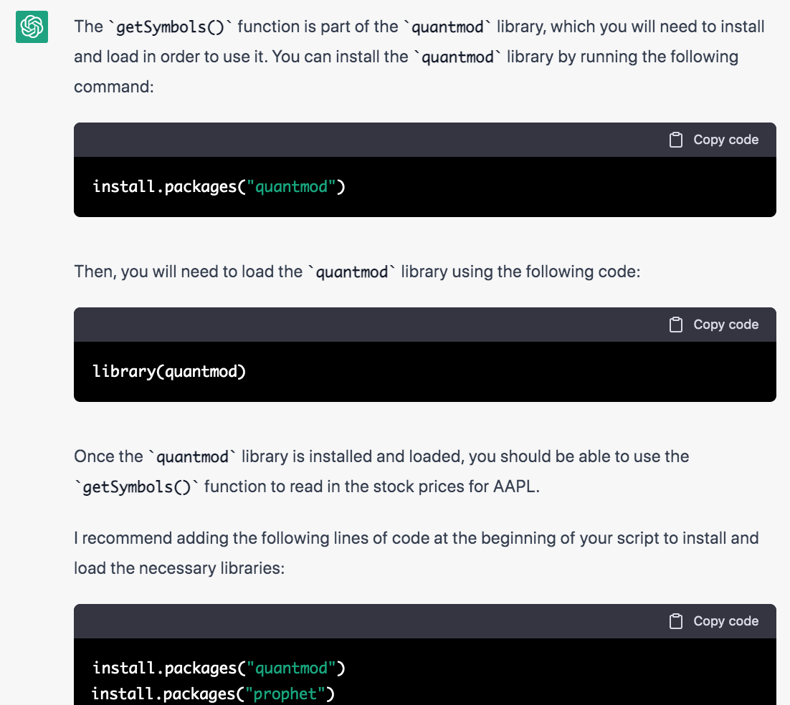
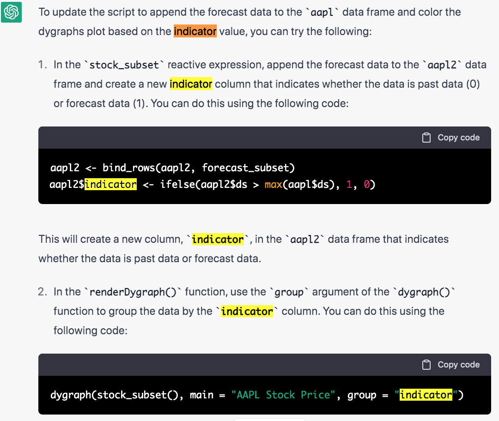
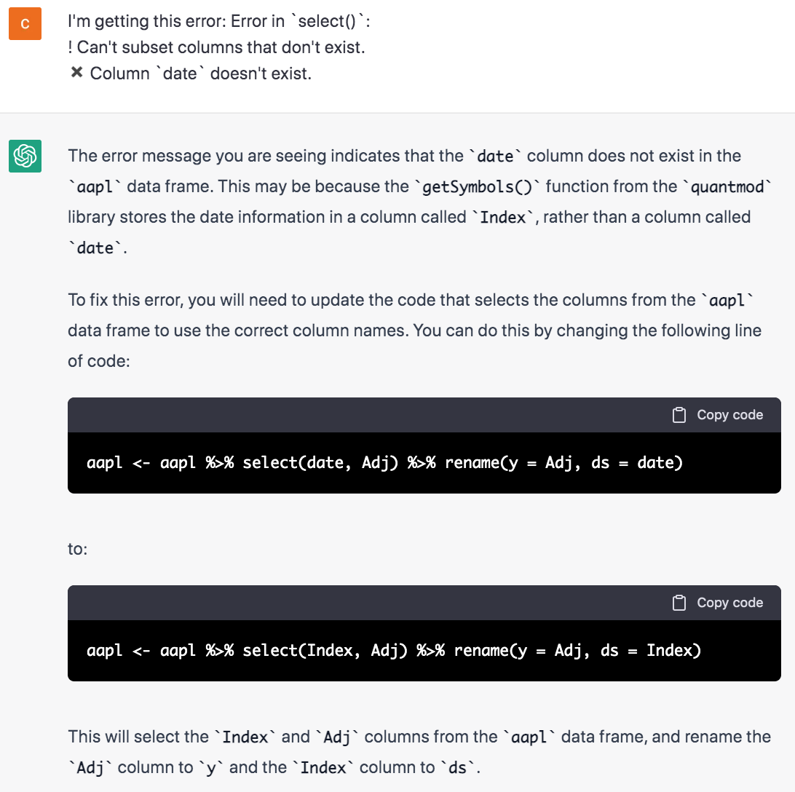
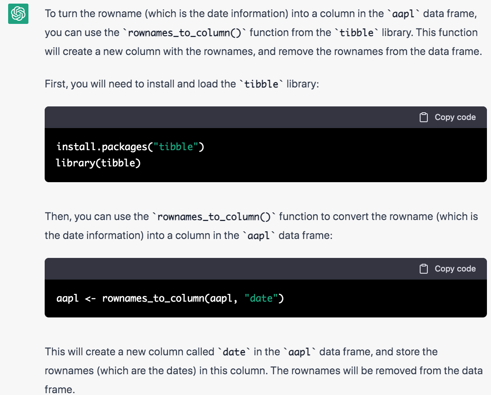
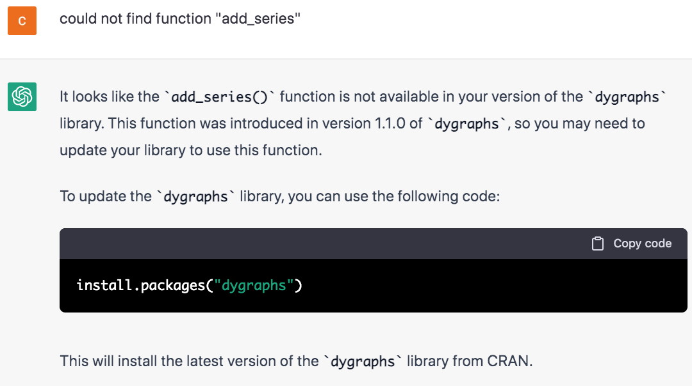
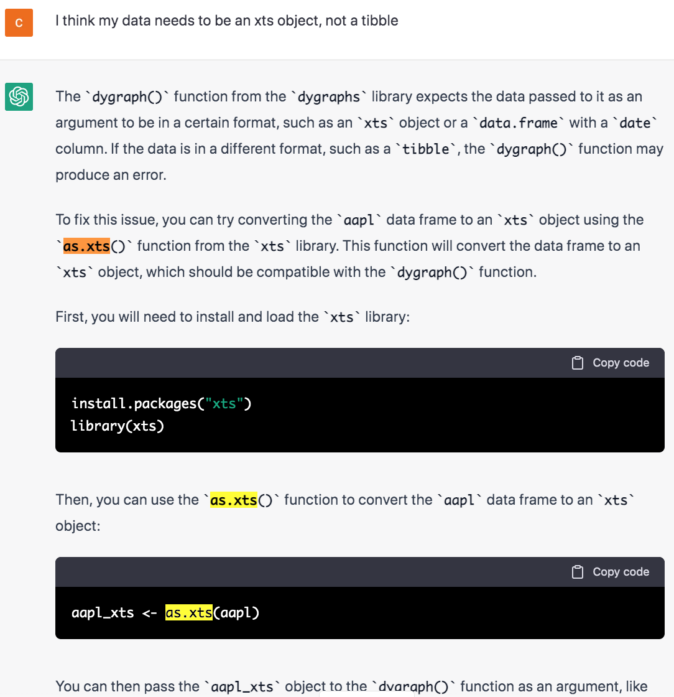
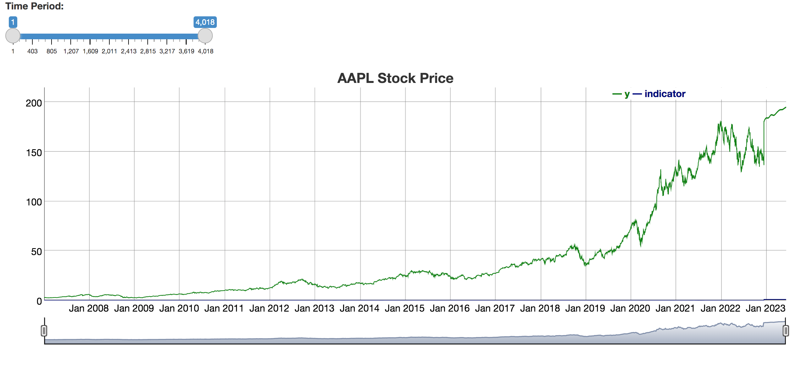
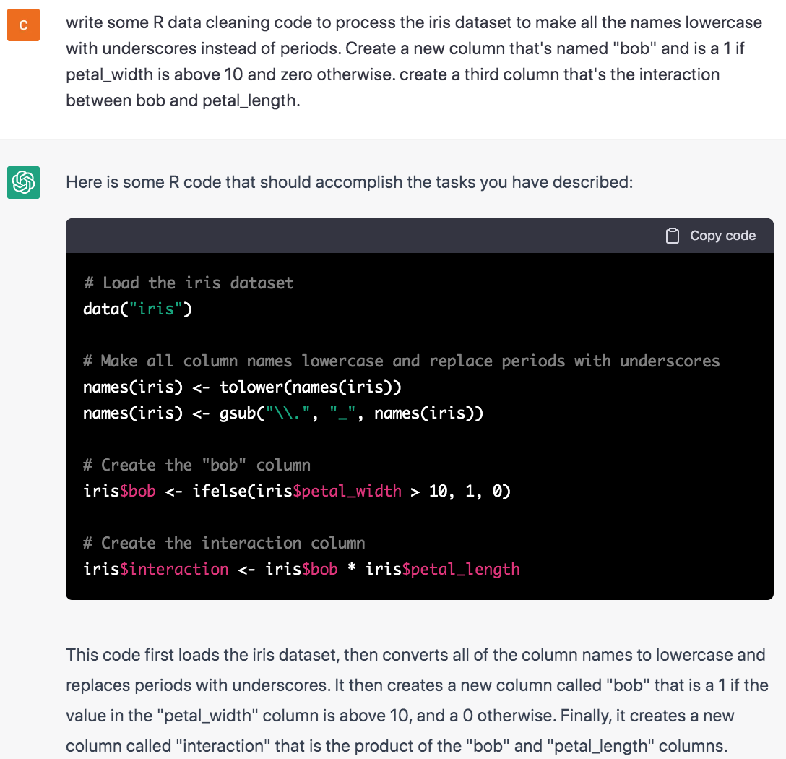

ChatGPT is nothing short of amazing, but I think I’ll still have a job as a data scientist for at least another year or so.
Goal
In this post, I’ll walk through the hour conversation I had with ChatGPT to build an R Shiny dashboard. My goal was to see if it can load in real-time data, do time-series forecasting, and visualize the results. For the most part, it could. Let’s dive in.
First, I was inspired by this post:
And here is the final result. A fully functional shiny app without actually writing a single line of code, built in under 3 minutes.
— Jose Fernandez (@jfernandez__) December 4, 2022
Wondering how it handles more complex queries, but still, this is insane. pic.twitter.com/LepjcMNk43
Building a Dashboard
My prompt was this:
Build an R shiny dashboard that uses a package to read in stock prices for AAPL and uses the prophet library to forecast the stock 6 months into the future. Visualize the data in an interactive plotting library with a slider window on the plot to zoom into different time periods.
And it gave me line-by-line instructions:

I asked it to consolidate all of that into one script, which produced this:
# Install and load the necessary libraries
install.packages("prophet")
library(shiny)
library(prophet)
library(tidyverse)
library(dygraphs)
# Read in the stock prices for AAPL
getSymbols("AAPL")
aapl <- as.data.frame(AAPL)
aapl <- aapl %>% select(date, Adj) %>% rename(y = Adj, ds = date)
# Fit a model to the stock price data
m <- prophet(aapl)
# Forecast the stock price 6 months into the future
future <- make_future_dataframe(m, periods = 180)
forecast <- predict(m, future)
# Define the user interface
ui <- fluidPage(
# Add a slider input widget
sliderInput("window", "Time Period:",
min = 1, max = length(aapl$y), value = c(1, length(aapl$y)), step = 1),
# Add a dygraphs plot
dygraphOutput("plot")
)
# Define the server function
server <- function(input, output) {
# Reactive expression to create a subset of the data based on the slider input
stock_subset <- reactive({
aapl[input$window[1]:input$window[2],]
})
# Render the dygraphs plot
output$plot <- renderDygraph({
dygraph(stock_subset(), main = "AAPL Stock Price") %>%
dyRangeSelector()
})
}
# Run the Shiny app
shinyApp(ui = ui, server = server)Pretty impressive start, to be honest.
What ChatGPT gets right
A few days ago I asked it to create an R Shiny app that could load in the iris dataset and create an interactive table. It did that with ease, as the twitter post above shows.
I then asked it to “re-write me that same app, but using python’s h2o-wave”. It was able to build me a simple app.
Today, when I asked it to build me an interactive visualization after building a time series forecasting model, it could get me all the core components. It only struggled on data inputs/outputs. The app would break and I’d ask it some questions, which it could sometimes answer, and would sometimes mislead me.
For example, the first error I got was : > I’m getting the error Error in getSymbols("AAPL") : could not find function "getSymbols"
ChatGPT replied:

It even adjusted my code and put the installation steps at the top of the script. Amazing.
Data Processing
I asked it to create an indicator variable for me so that I could color my dygraphs chart by forecasts vs. historical:

Here was my prompt:
Don’t use
add_series()since you’re wrong and it’s not a function in dygraphs. Instead, append the forecasts to the aapl in the stock_subset function and create a new indicator for the forecasted values where 0 is past data and 1 is forecasted data. Then, color the dygraphs chart based on the indicator value. Re-write this script below accordingly.
Look at that code! It knew to filter appl2$ds > max(appl$ds). That’s exactly how you subset a prophet dataframe (which returns all historical and future forecasts in one dataframe). It knew that appl was the first dataset and appl2 was the derived dataset. It knew that it had to take the max date from appl. This is absolutely amazing, hands down.
aapl2 <- bind_rows(aapl2, forecast_subset)
aapl2$indicator <- ifelse(aapl2$ds > max(aapl$ds), 1, 0)What it got wrong
ChatGPT won’t put me out of the job for a bit, though. (Like at least 6 months maybe?)
Data inspection
I then got this error:
I'm getting this error: Error in `select()`:
! Can't subset columns that don't exist.
✖ Column `date` doesn't exist.ChatGPT gave me the ring-around. It didn’t know that the dates were stored as the rownames, but confidently gave me answers like this:

To it’s credit, it recommended I inspect the data myself:

Once I figured out the problem, I told it that the rownames were dates, and that date wasn’t a column. It had just the solution for me:

Misleading Functions
Twice, it told me that dygraphs had functions that it didn’t actually have. It even wrote code for me. For example, it recommended this to me:
dygraph(stock_subset(), main = "AAPL Stock Price") %>%
add_series(data = forecast_subset, col = "red") %>%
dyRangeSelector()And it doubled down:

Data Conversion
It told me to use the xts package so that dygraphs could read the data in. This was accurate - dygraphs cannot read in tibbles.

But it was misleading me a little bit. Again, I had to look at the data, because the direct code it gave me was missing columns that it assumed it had.
Final Product
After a little bit of love, here’s the output:

# Install and load the necessary libraries
# install.packages("prophet")
# install.packages("quantmod")
# install.packages("xts")
library(quantmod)
library(shiny)
library(prophet)
library(tidyverse)
library(dygraphs)
library(xts)
# Read in the stock prices for AAPL
getSymbols("AAPL")
aapl <- as.data.frame(AAPL)
# Convert the rowname (date information) into a column
aapl <- rownames_to_column(aapl, "date")
# Select the necessary columns and rename them
aapl <- aapl %>% select(date, AAPL.Adjusted) %>% rename(y = AAPL.Adjusted, ds = date)
aapl$ds <- as.Date(aapl$ds)
# Fit a model to the stock price data
m <- prophet(aapl)
# Forecast the stock price 6 months into the future
future <- make_future_dataframe(m, periods = 180)
forecast <- predict(m, future)
# Define the user interface
ui <- fluidPage(
# Add a slider input widget
sliderInput("window", "Time Period:",
min = 1, max = length(aapl$y), value = c(1, length(aapl$y)), step = 1),
# Add a dygraphs plot
dygraphOutput("plot")
)
# Define the server function
server <- function(input, output) {
# Reactive expression to create a subset of the data based on the slider input
stock_subset <- reactive({
aapl2 <- aapl[input$window[1]:input$window[2],]
# https://stackoverflow.com/questions/4297231/converting-a-data-frame-to-xts
#
forecast_subset <- forecast %>% select(ds, y=yhat) %>%
filter(ds >= "2022-12-15")
aapl2 <- bind_rows(aapl2, forecast_subset)
aapl2$ds <- as.Date(aapl2$ds)
aapl2$indicator <- ifelse(aapl2$ds > max(aapl$ds), 1, 0)
aapl2 <- as.xts(aapl2[, -1], aapl2[, 1])
return(aapl2)
})
# Render the dygraphs plot
output$plot <- renderDygraph({
dygraph(aapl2, main = "AAPL Stock Price", group='indicator') %>%
# dySeries(color = c("darkblue", "red"))
dyRangeSelector()
})
}
# Run the Shiny app
shinyApp(ui = ui, server = server)Data Processing
After writing all the above, I thought, what else can it do? Here’s a bonus. ChatGPT can understand and do mundane data processing very effectively:

Takeaways
To get from the first script to the second script took an hour. If I didn’t already know shiny, and didn’t already know data processing, or know what it was looking for, then some steps would have perhaps been impossible.
ChatGPT is amazing at:
- Boilerplate code
- Pointing you in the right direction with code snippets (like a way more useful Wikipedia)
- Taught me packages I had never used before (
dygraphs,xts) - Could write 95% valid Shiny code that did data visualization with timeseries data (not easy, even for an experienced programmer).
- Somehow mostly knows the data structures of
prophetdatasets, can make predictions, can filter the data - Simple data processing (could create a smart indicator variable)
ChatGPT has ways to go with:
- Knowing everything about the code base (misleading code snippets)
- Not being so confident when it’s wrong
- Debugging nuanced things. I think it conflated
plotly’s API withdygraph’s when coloring series. - The user still needs to know what questions to ask.
If ChatGPT actually had access to my data using a REPL (like could run names(df) itself and see the output), I’d be done for. How hard would that be, though? Technically, it’d be very feasible through some API calls.
too long; but read the whole thing: ChatGPT is going to be very powerful in 2-5 years. Data analytics is about to get disrupted.
See the full chat here.
_________________________
Bryan is an amatueur husband, father, Christian, and tech writer, but a professional data scientist. If you liked reading, perhaps you’ll also like subscribing: